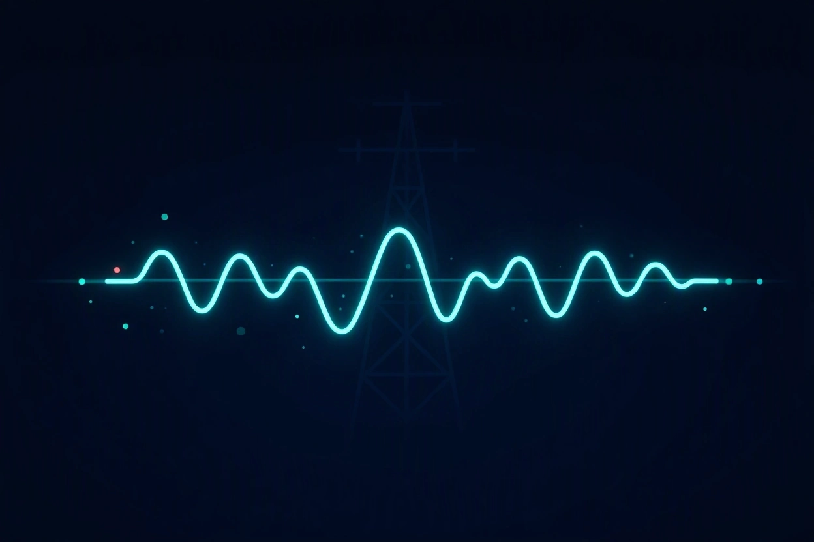
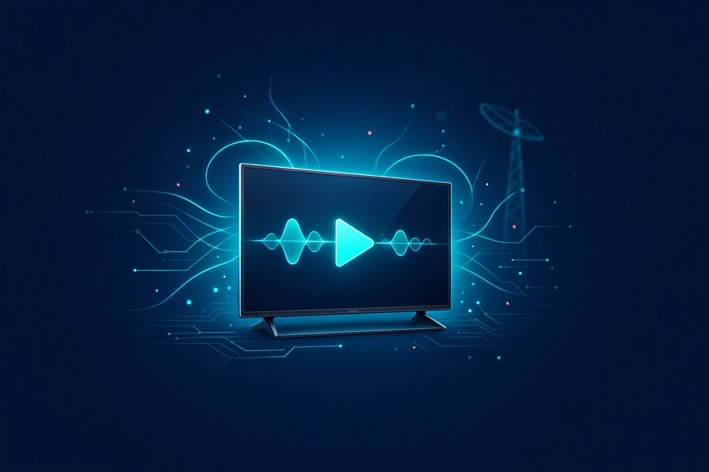
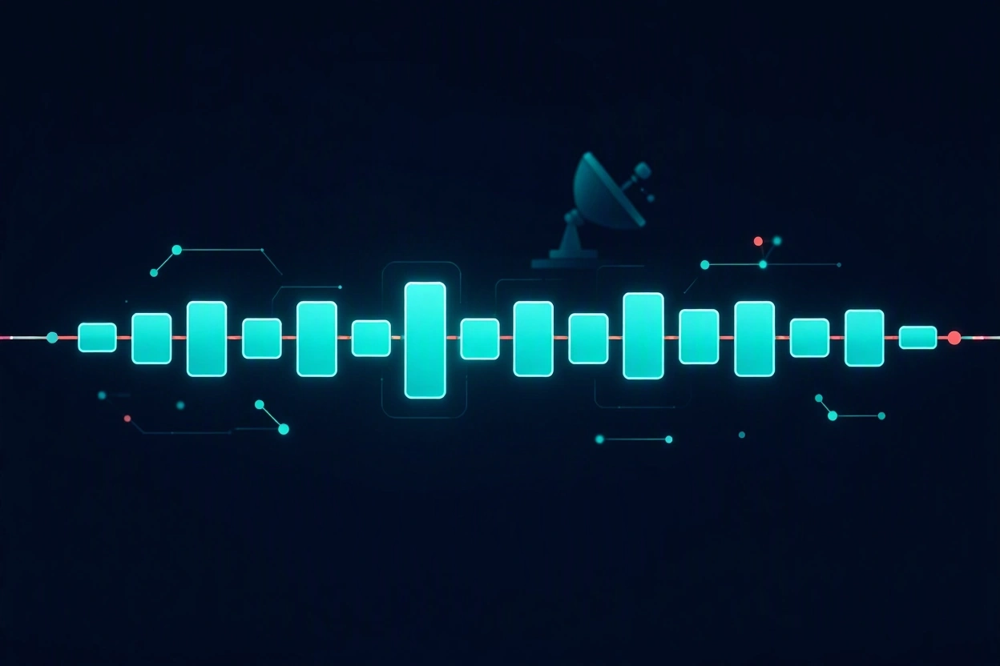
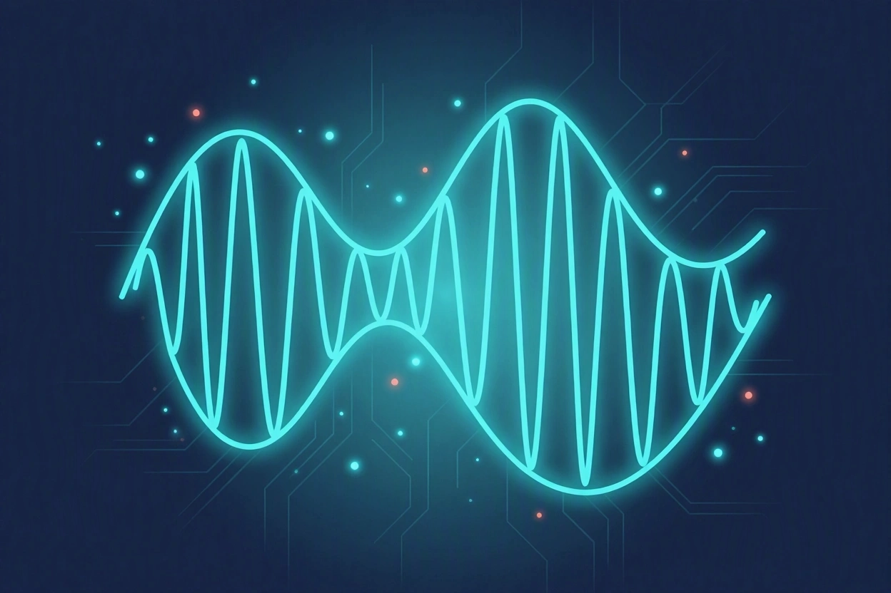
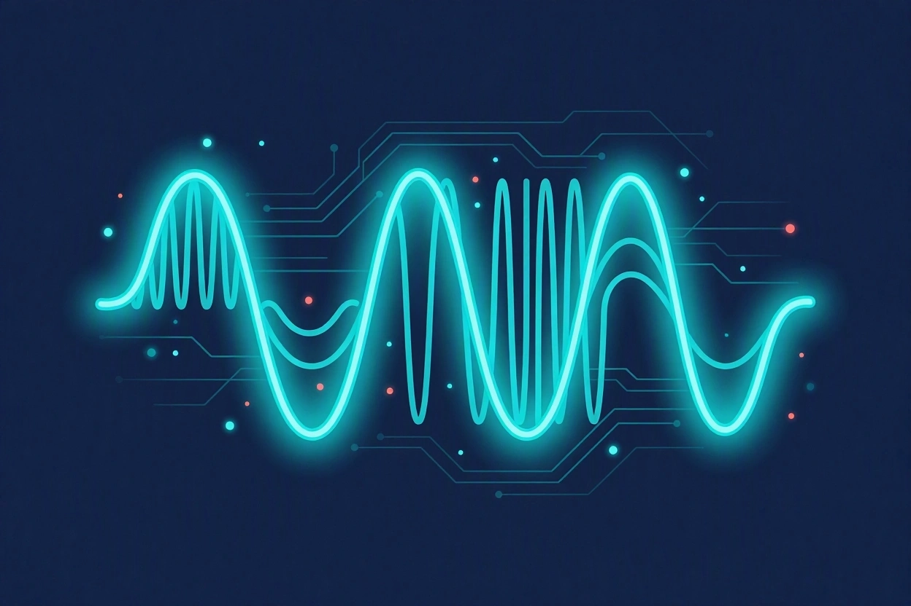
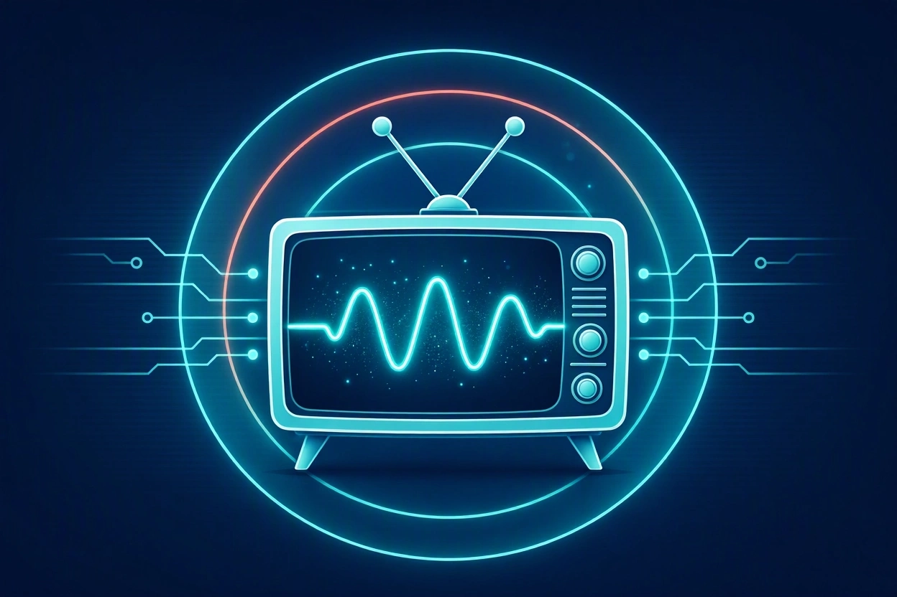
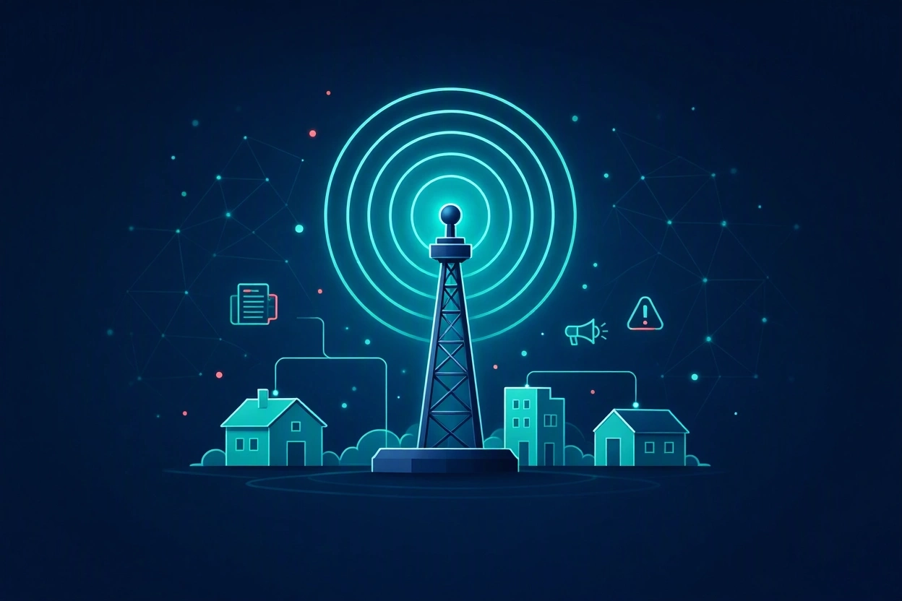

Antes

Señal analógica
Ondas continuas y sensibles al ruido.
Una mirada a los fundamentos, evolución y relevancia de dos medios que transformaron la comunicación.

La radio y la televisión son los medios de comunicación masiva más importantes de la historia. Hoy hablaremos de cómo funcionan y por qué siguen siendo relevantes.

Ondas continuas y sensibles al ruido.

Datos binarios con mejor calidad.
Comunicación mediante ondas electromagnéticas.
Difusión de contenido sonoro para todos.
Información rápida y de amplio alcance.
Transmisiones en vivo y entretenimiento.

Llega más lejos porque rebota en la ionosfera.

Se escucha más claro por su alta fidelidad.
La radio es gratis, llega a casi todos lados y en emergencias solo necesita pilas.
Combina imagen y sonido para comunicar.
Contenido audiovisual de entretenimiento.
Historias distribuidas por episodios.
Información con imagen y sonido.

Imagen con ruido · un solo canal · relación 4:3.
HD/4K · varios canales · subtítulos.

Conectan a las personas con acontecimientos y noticias.
Ofrecen música, películas, series, deportes y cultura.
También permiten transmitir contenidos educativos y culturales a grandes audiencias.